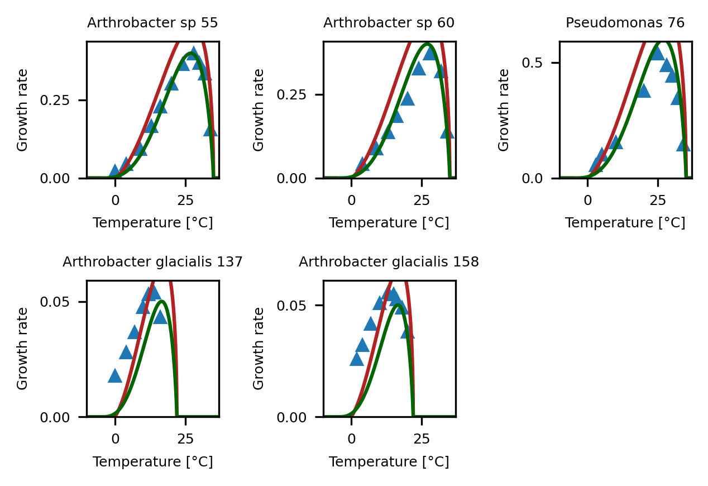
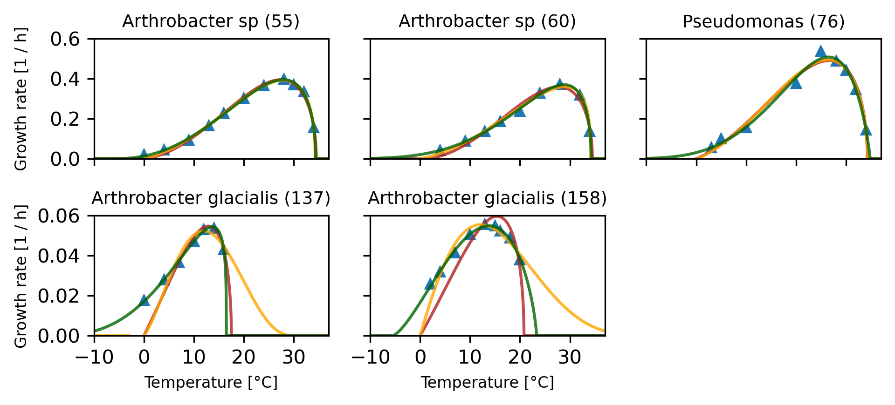

import numpy as np
import pandas as pd
import random
random.seed(42)
from matplotlib import pyplot as plt
from scipy.optimize import minimize
from sklearn.model_selection import LeaveOneOutGounot dataset of bacteria from glaciers
def briere1(T, Tmin=10.0, Tmax=50.0, c=1.0):
result = np.zeros(len(T))
cond = (Tmin < T) & (T < Tmax)
result[cond] = c * T[cond] * np.exp(np.log(T[cond] - Tmin) + 0.5 * np.log(Tmax - T[cond]))
return result
def briere2(T, Tmin=10.0, Tmax=50.0, c=1.0, b=2.0):
result = np.zeros(len(T))
cond = (Tmin < T) & (T < Tmax)
result[cond] = c * T[cond] * np.exp(np.log(T[cond] - Tmin) + np.log(Tmax - T[cond]) / b)
return result
# Fully biologically interpretable parametrization of flexTPC model
def flexTPC(T, Tmin=10.0, Tmax=50.0, rmax=1.0, α=0.8, β=0.2):
result = np.zeros(len(T))
cond = (Tmin < T) & (T < Tmax)
s = α * (1.0 - α) / β**2
result[cond] = rmax * np.exp(s * (α * (np.log(T[cond] - Tmin) - np.log(α)) +
(1 - α) * (np.log(Tmax - T[cond]) - np.log(1 - α) )
- np.log(Tmax - Tmin)))
return resultglacierbac = pd.read_csv("glacierbac.csv")
glacierbac| Unnamed: 0 | species | strain | X | Y | psychro | T | r | |
|---|---|---|---|---|---|---|---|---|
| 0 | 0 | Arthrobacter glacialis | 137 | 3.457467 | 3.761369 | True | 16.0 | 0.043007 |
| 1 | 1 | Arthrobacter glacialis | 137 | 3.482460 | 3.985740 | True | 14.0 | 0.053825 |
| 2 | 2 | Arthrobacter glacialis | 137 | 3.501018 | 3.973215 | True | 12.0 | 0.053155 |
| 3 | 3 | Arthrobacter glacialis | 137 | 3.527881 | 3.858413 | True | 10.0 | 0.047390 |
| 4 | 4 | Arthrobacter glacialis | 137 | 3.565603 | 3.596571 | True | 7.0 | 0.036473 |
| 5 | 5 | Arthrobacter glacialis | 137 | 3.603963 | 3.328340 | True | 4.0 | 0.027892 |
| 6 | 6 | Arthrobacter glacialis | 137 | 3.655096 | 2.874697 | True | 0.0 | 0.017720 |
| 7 | 7 | Arthrobacter glacialis | 158 | 3.408169 | 3.639039 | True | 20.0 | 0.038055 |
| 8 | 8 | Arthrobacter glacialis | 158 | 3.431886 | 3.888990 | True | 18.0 | 0.048862 |
| 9 | 9 | Arthrobacter glacialis | 158 | 3.457496 | 3.959770 | True | 16.0 | 0.052445 |
| 10 | 10 | Arthrobacter glacialis | 158 | 3.470943 | 4.004769 | True | 15.0 | 0.054859 |
| 11 | 11 | Arthrobacter glacialis | 158 | 3.492705 | 4.017891 | True | 13.0 | 0.055584 |
| 12 | 12 | Arthrobacter glacialis | 158 | 3.528532 | 3.928822 | True | 10.0 | 0.050847 |
| 13 | 13 | Arthrobacter glacialis | 158 | 3.567542 | 3.724600 | True | 7.0 | 0.041455 |
| 14 | 14 | Arthrobacter glacialis | 158 | 3.607823 | 3.462797 | True | 4.0 | 0.031906 |
| 15 | 15 | Arthrobacter glacialis | 158 | 3.637232 | 3.252033 | True | 2.0 | 0.025843 |
| 16 | 16 | Arthrobacter sp | 55 | 3.254137 | 5.044757 | False | 34.0 | 0.155207 |
| 17 | 17 | Arthrobacter sp | 55 | 3.276011 | 5.813081 | False | 32.0 | 0.334649 |
| 18 | 18 | Arthrobacter sp | 55 | 3.301625 | 5.909461 | False | 30.0 | 0.368507 |
| 19 | 19 | Arthrobacter sp | 55 | 3.322757 | 5.986574 | False | 28.0 | 0.398048 |
| 20 | 20 | Arthrobacter sp | 55 | 3.363704 | 5.897580 | False | 24.0 | 0.364155 |
| 21 | 21 | Arthrobacter sp | 55 | 3.411676 | 5.712691 | False | 20.0 | 0.302684 |
| 22 | 22 | Arthrobacter sp | 55 | 3.460915 | 5.431820 | False | 16.0 | 0.228565 |
| 23 | 23 | Arthrobacter sp | 55 | 3.500546 | 5.106008 | False | 13.0 | 0.165010 |
| 24 | 24 | Arthrobacter sp | 55 | 3.549740 | 4.524336 | False | 9.0 | 0.092235 |
| 25 | 25 | Arthrobacter sp | 55 | 3.605948 | 3.769969 | False | 4.0 | 0.043379 |
| 26 | 26 | Arthrobacter sp | 55 | 3.657034 | 2.996326 | False | 0.0 | 0.020012 |
| 27 | 27 | Arthrobacter sp | 60 | 3.258599 | 4.923223 | False | 34.0 | 0.137445 |
| 28 | 28 | Arthrobacter sp | 60 | 3.277923 | 5.761909 | False | 32.0 | 0.317955 |
| 29 | 29 | Arthrobacter sp | 60 | 3.322746 | 5.916174 | False | 28.0 | 0.370989 |
| 30 | 30 | Arthrobacter sp | 60 | 3.363047 | 5.788771 | False | 24.0 | 0.326611 |
| 31 | 31 | Arthrobacter sp | 60 | 3.410359 | 5.463071 | False | 20.0 | 0.235821 |
| 32 | 32 | Arthrobacter sp | 60 | 3.460883 | 5.220620 | False | 16.0 | 0.185049 |
| 33 | 33 | Arthrobacter sp | 60 | 3.499878 | 4.913998 | False | 13.0 | 0.136183 |
| 34 | 34 | Arthrobacter sp | 60 | 3.549093 | 4.479527 | False | 9.0 | 0.088193 |
| 35 | 35 | Arthrobacter sp | 60 | 3.606580 | 3.712378 | False | 4.0 | 0.040951 |
| 36 | 36 | Pseudomonas | 76 | 3.252846 | 4.967938 | False | 34.0 | 0.143730 |
| 37 | 37 | Pseudomonas | 76 | 3.276656 | 5.845091 | False | 32.0 | 0.345534 |
| 38 | 38 | Pseudomonas | 76 | 3.302292 | 6.088670 | False | 30.0 | 0.440835 |
| 39 | 39 | Pseudomonas | 76 | 3.321507 | 6.191355 | False | 28.0 | 0.488508 |
| 40 | 40 | Pseudomonas | 76 | 3.351601 | 6.287801 | False | 25.0 | 0.537969 |
| 41 | 41 | Pseudomonas | 76 | 3.411068 | 5.930282 | False | 20.0 | 0.376261 |
| 42 | 42 | Pseudomonas | 76 | 3.531257 | 5.042463 | False | 10.0 | 0.154851 |
| 43 | 43 | Pseudomonas | 76 | 3.590712 | 4.601743 | False | 5.0 | 0.099658 |
| 44 | 44 | Pseudomonas | 76 | 3.627744 | 4.013492 | False | 3.0 | 0.055340 |
Fitting temperature response curves to model
def nloglik(θ, Tdata, rdata, model=flexTPC):
params, σ2 = θ[:-1], θ[-1]
Tmin, Tmax = θ[:2]
outside = (Tdata < Tmin) | (Tdata > Tmax)
inside = ~outside
n = len(rdata[inside])
if np.any(rdata[outside] > 0.0):
return np.inf
else:
return 0.5 * (n * np.log(2*np.pi*σ2) + np.sum((rdata[inside] - model(Tdata[inside], *params))**2 / σ2))
def AIC(nll, p):
return 2 * nll + 2 * p
def BIC(nll, n, p):
return 2 * nll + p * np.log(n)strains = [55, 60, 76, 137, 158]
initial_b1 = {55:[-5.0, 35.0, 0.0002, 0.01],
60:[-5.0, 35.0, 0.0002, 0.01],
76:[-5.0, 35.0, 0.0003, 0.01],
137:[-5.0, 22.0, 0.00008, 0.01],
158:[-5.0, 22.0, 0.00008, 0.01]}
initial_b2 = {55:[-5.0, 35.0, 0.0002, 2.0, 0.01],
60:[-5.0, 35.0, 0.0002, 2.0, 0.01],
76:[-5.0, 35.0, 0.0003, 2.0, 0.01],
137:[-5.0, 22.0, 0.00008, 2.0, 0.01],
158:[-5.0, 22.0, 0.00008, 2.0, 0.01]}
initial_flex = {55:[-5.0, 35.0, 0.4, 0.8, 0.2, 0.01],
60:[-5.0, 35.0, 0.4, 0.8, 0.2, 0.01],
76:[-5.0, 35.0, 0.6, 0.8, 0.2, 0.01],
137:[-5.0, 22.0, 0.05, 0.8, 0.2, 0.01],
158:[-5.0, 22.0, 0.05, 0.8, 0.2, 0.01]}# Check initial value curves.
T = np.arange(-10, 40, 0.001)
plt.figure(figsize=(4.33, 3), dpi=300)
for i, s in enumerate(strains):
subset = glacierbac[glacierbac["strain"] == s]
species = list(subset["species"])[0]
plt.subplot(2, 3, i+1)
# Plot datapoints.
Tdata = subset["T"]
rdata = subset["r"]
plt.plot(Tdata, rdata, '^', markersize=5)
plt.xticks(fontsize=6)
plt.yticks(fontsize=6)
plt.xlim(-10, 37)
plt.ylim(0, max(rdata)*1.1)
# Plot fitted curves by Briere.
#params = params_b1[s]["x"]
#plt.plot(T, briere1(T, *params[:-1]), color="firebrick")
plt.plot(T, briere1(T, *initial_b1[s][:-1]), color="firebrick")
#params = params_eb[s]["x"]
#plt.plot(T, extbriere(T, *params[:-1]), color="steelblue")
plt.plot(T, flexTPC(T, *initial_flex[s][:-1]), color="darkgreen")
#plt.ylim(-0.025, 0.425)
plt.xlabel("Temperature [°C]", fontsize=6)
plt.ylabel("Growth rate", fontsize=6)
plt.title(species + " " + str(s), fontsize=6)
plt.tight_layout()
# LOOCV.
loo = LeaveOneOut()
params = {"flexTPC":{}, "b1":{}, "b2":{}}
models = ["b1", "b2", "flexTPC"]
method = "Nelder-Mead"
loocv_nll = {model:{strain:[] for strain in strains } for model in models}
for i, s in enumerate(strains):
subset = glacierbac[glacierbac["strain"] == s]
Tdata = np.array(subset["T"])
rdata = np.array(subset["r"])
loo.get_n_splits(glacierbac["T"][glacierbac["strain"] == s])
for train, test in loo.split(Tdata):
T_train, r_train = Tdata[train], rdata[train]
T_test, r_test = Tdata[test], rdata[test]
params["b1"][s] = minimize(nloglik, initial_b1[s],
bounds=[(-20.0, 20.0),
(10.0, 50.0),
(0.0, 1.0),
(0, 1.0)],
args=(T_train, r_train, briere1), options={"maxiter":10000}, method=method)
θ = params["b1"][s]["x"]
loocv_nll["b1"][s].append(nloglik(θ, T_test, r_test, model=briere1))
params["b2"][s] = minimize(nloglik, initial_b2[s],
bounds=[(-20.0, 20.0),
(10.0, 50.0),
(0.0, 1.0),
(0.0, 20.0),
(0, 1.0)],
args=(Tdata, rdata, briere2), options={"maxiter":10000}, method=method)
θ = params["b2"][s]["x"]
loocv_nll["b2"][s].append(nloglik(θ, T_test, r_test, model=briere2))
params["flexTPC"][s] = minimize(nloglik, initial_flex[s],
bounds=[(-20.0, 20.0),
(10.0, 50.0),
(0.0, 1.0),
(0.0, 1.0),
(0.0, np.inf),
(0, 1.0)],
args=(Tdata, rdata, flexTPC), options={"maxiter":10000}, method=method)
θ = params["flexTPC"][s]["x"]
loocv_nll["flexTPC"][s].append(nloglik(θ, T_test, r_test, model=flexTPC))/var/folders/g8/wjqhnz1n01d5l4pdv8cnykw40000gp/T/ipykernel_14016/2868019315.py:10: RuntimeWarning: divide by zero encountered in log
return 0.5 * (n * np.log(2*np.pi*σ2) + np.sum((rdata[inside] - model(Tdata[inside], *params))**2 / σ2))
/var/folders/g8/wjqhnz1n01d5l4pdv8cnykw40000gp/T/ipykernel_14016/2868019315.py:10: RuntimeWarning: divide by zero encountered in divide
return 0.5 * (n * np.log(2*np.pi*σ2) + np.sum((rdata[inside] - model(Tdata[inside], *params))**2 / σ2))
/var/folders/g8/wjqhnz1n01d5l4pdv8cnykw40000gp/T/ipykernel_14016/2868019315.py:10: RuntimeWarning: invalid value encountered in scalar add
return 0.5 * (n * np.log(2*np.pi*σ2) + np.sum((rdata[inside] - model(Tdata[inside], *params))**2 / σ2))?minimize# Fit to whole datasets.
params = {"b1":{}, "b2":{}, "flexTPC":{}}
models = ["b1", "b2", "flexTPC"]
method = "Nelder-Mead"
for i, s in enumerate(strains):
subset = glacierbac[glacierbac["strain"] == s]
Tdata = np.array(subset["T"])
rdata = np.array(subset["r"])
params["b1"][s] = minimize(nloglik, initial_b1[s],
bounds=[(-20.0, 20.0),
(10.0, 50.0),
(0.0, 1.0),
(0, 1.0)],
args=(Tdata, rdata, briere1), options={"maxiter":100000}, method=method)
params["b2"][s] = minimize(nloglik, initial_b2[s],
bounds=[(-20.0, 20.0),
(10.0, 50.0),
(0.0, 1.0),
(0.0, 20.0),
(0, 1.0)],
args=(Tdata, rdata, briere2), options={"maxiter":100000}, method=method)
params["flexTPC"][s] = minimize(nloglik, initial_flex[s],
bounds=[(-20.0, 20.0),
(10.0, 50.0),
(0.0, 1.0),
(0.0, 1.0),
(0.0, np.inf),
(0, 1.0)],
args=(Tdata, rdata), options={"maxiter":100000}, method=method)/var/folders/g8/wjqhnz1n01d5l4pdv8cnykw40000gp/T/ipykernel_14016/2868019315.py:10: RuntimeWarning: divide by zero encountered in log
return 0.5 * (n * np.log(2*np.pi*σ2) + np.sum((rdata[inside] - model(Tdata[inside], *params))**2 / σ2))
/var/folders/g8/wjqhnz1n01d5l4pdv8cnykw40000gp/T/ipykernel_14016/2868019315.py:10: RuntimeWarning: divide by zero encountered in divide
return 0.5 * (n * np.log(2*np.pi*σ2) + np.sum((rdata[inside] - model(Tdata[inside], *params))**2 / σ2))
/var/folders/g8/wjqhnz1n01d5l4pdv8cnykw40000gp/T/ipykernel_14016/2868019315.py:10: RuntimeWarning: invalid value encountered in scalar add
return 0.5 * (n * np.log(2*np.pi*σ2) + np.sum((rdata[inside] - model(Tdata[inside], *params))**2 / σ2))params["flexTPC"]{55: message: Optimization terminated successfully.
success: True
status: 0
fun: -39.65586276875569
x: [-9.778e+00 3.446e+01 3.967e-01 8.511e-01 1.914e-01
4.331e-05]
nit: 376
nfev: 620
final_simplex: (array([[-9.778e+00, 3.446e+01, ..., 1.914e-01,
4.331e-05],
[-9.778e+00, 3.446e+01, ..., 1.914e-01,
4.330e-05],
...,
[-9.778e+00, 3.446e+01, ..., 1.914e-01,
4.331e-05],
[-9.778e+00, 3.446e+01, ..., 1.914e-01,
4.330e-05]]), array([-3.966e+01, -3.966e+01, -3.966e+01, -3.966e+01,
-3.966e+01, -3.966e+01, -3.966e+01])),
60: message: Optimization terminated successfully.
success: True
status: 0
fun: -33.56410489101529
x: [-2.000e+01 3.426e+01 3.698e-01 9.001e-01 1.386e-01
3.382e-05]
nit: 731
nfev: 1132
final_simplex: (array([[-2.000e+01, 3.426e+01, ..., 1.386e-01,
3.382e-05],
[-2.000e+01, 3.426e+01, ..., 1.386e-01,
3.387e-05],
...,
[-2.000e+01, 3.426e+01, ..., 1.386e-01,
3.385e-05],
[-2.000e+01, 3.426e+01, ..., 1.386e-01,
3.384e-05]]), array([-3.356e+01, -3.356e+01, -3.356e+01, -3.356e+01,
-3.356e+01, -3.356e+01, -3.356e+01])),
76: message: Optimization terminated successfully.
success: True
status: 0
fun: -23.344804943246306
x: [-2.000e+01 3.482e+01 5.078e-01 8.481e-01 1.510e-01
3.272e-04]
nit: 1149
nfev: 1740
final_simplex: (array([[-2.000e+01, 3.482e+01, ..., 1.510e-01,
3.272e-04],
[-2.000e+01, 3.482e+01, ..., 1.510e-01,
3.273e-04],
...,
[-2.000e+01, 3.482e+01, ..., 1.510e-01,
3.273e-04],
[-2.000e+01, 3.482e+01, ..., 1.510e-01,
3.273e-04]]), array([-2.334e+01, -2.334e+01, -2.334e+01, -2.334e+01,
-2.334e+01, -2.334e+01, -2.334e+01])),
137: message: Optimization terminated successfully.
success: True
status: 0
fun: -31.206557942448455
x: [-9.353e+00 2.433e+01 5.088e-02 6.554e-01 2.325e-01
7.856e-06]
nit: 388
nfev: 646
final_simplex: (array([[-9.353e+00, 2.433e+01, ..., 2.325e-01,
7.856e-06],
[-9.353e+00, 2.433e+01, ..., 2.325e-01,
7.856e-06],
...,
[-9.353e+00, 2.433e+01, ..., 2.325e-01,
7.856e-06],
[-9.353e+00, 2.433e+01, ..., 2.325e-01,
7.856e-06]]), array([-3.121e+01, -3.121e+01, -3.121e+01, -3.121e+01,
-3.121e+01, -3.121e+01, -3.121e+01])),
158: message: Optimization terminated successfully.
success: True
status: 0
fun: -51.12053843952405
x: [-5.551e+00 2.333e+01 5.495e-02 6.703e-01 3.158e-01
6.822e-07]
nit: 263
nfev: 439
final_simplex: (array([[-5.551e+00, 2.333e+01, ..., 3.158e-01,
6.822e-07],
[-5.551e+00, 2.333e+01, ..., 3.158e-01,
6.819e-07],
...,
[-5.551e+00, 2.333e+01, ..., 3.158e-01,
6.824e-07],
[-5.551e+00, 2.333e+01, ..., 3.158e-01,
6.819e-07]]), array([-5.112e+01, -5.112e+01, -5.112e+01, -5.112e+01,
-5.112e+01, -5.112e+01, -5.112e+01]))}T = np.arange(-10, 40, 0.001)
fig, axarr = plt.subplots(2, 3, figsize=(6.5, 3), dpi=300, sharex=True, sharey='row')
for i, s in enumerate(strains):
ax = axarr[i // 3, i % 3]
subset = glacierbac[glacierbac["strain"] == s]
species = list(subset["species"])[0]
# Plot datapoints.
Tdata = subset["T"]
rdata = subset["r"]
ax.plot(Tdata, rdata, '^', markersize=5)
ax.set_xticks([-10, 0, 10, 20, 30])
ax.set_xlim(-10, 37)
if s in (55, 60, 76):
#ax.set_ylim(0, round(max(rdata)*1.2, 1) )
#ax.set_yticks(fontsize=5)
ax.set_ylim(0, 0.6)
else:
ax.set_ylim(0, 0.06)
#ax.set_ylim(0, round(max(rdata)*1.1, 2) )
# Plot fitted curves by Briere.
par = params["b1"][s]["x"]
ax.plot(T, briere1(T, *par[:-1]), color="firebrick", alpha=0.8)
par = params["b2"][s]["x"]
ax.plot(T, briere2(T, *par[:-1]), color="orange", alpha=0.8)
#par = params["rmb3"][s]["x"]
#plt.plot(T, rmodbriere_3(T, *par[:-1]), color="blue", alpha=0.7)
#par = params["rmb4"][s]["x"]
#plt.plot(T, rmodbriere_4(T, *par[:-1]), color="gray", alpha=0.7)
par = params["flexTPC"][s]["x"]
ax.plot(T, flexTPC(T, *par[:-1]), color="darkgreen", alpha=0.8)
ax.set_title(species + " (" + str(s) + ")", fontsize=9)
if s in (137, 158):
ax.set_xlabel("Temperature [°C]", fontsize=8)
if s in (55, 137):
ax.set_ylabel(r"Growth rate [1 / h]", fontsize=8)
axarr[-1, -1].axis("off")
plt.tight_layout()
fig.align_labels()
plt.savefig("glacierbac.pdf")
plt.savefig("glacierbac.png")
plt.savefig("glacierbac.svg")
species_list = ['Arthrobacter sp', 'Arthrobacter sp', 'Pseudomonas', 'Arthrobacter glacialis', 'Arthrobacter glacialis']
n_params = {'b1':4, 'b2':5, 'flexTPC':6} # Includes standard deviation.
param_matrix = {model:np.zeros((5, n_params[model])) for model in models}
for model in models:
for i, strain in enumerate(strains):
param_matrix[model][i, ] = params[model][strain]["x"]
colnames = {'b1':['Tmin', 'Tmax', 'c', 'sigma2'],
'b2':['Tmin', 'Tmax', 'c', 'm', 'sigma2'],
'flexTPC':['Tmin', 'Tmax', 'rmax', 'alpha', 'beta', 'sigma2']}
param_df = {model:pd.DataFrame(param_matrix[model], columns=colnames[model]) for model in models}
for model in models:
param_df[model]['strain'] = strains
param_df[model]['species'] = species_list
param_df[model] = param_df[model][['species', 'strain'] + colnames[model]]
param_df[model].to_csv(f'glacierbac_params_{model}.csv', index=False)param_df['flexTPC']| species | strain | Tmin | Tmax | rmax | alpha | beta | sigma2 | |
|---|---|---|---|---|---|---|---|---|
| 0 | Arthrobacter sp | 55 | -9.777811 | 34.456556 | 0.396684 | 0.851142 | 0.191401 | 4.330609e-05 |
| 1 | Arthrobacter sp | 60 | -19.999030 | 34.263106 | 0.369805 | 0.900109 | 0.138623 | 3.382453e-05 |
| 2 | Pseudomonas | 76 | -19.999933 | 34.822869 | 0.507802 | 0.848116 | 0.151044 | 3.272288e-04 |
| 3 | Arthrobacter glacialis | 137 | -9.353280 | 24.330746 | 0.050876 | 0.655434 | 0.232482 | 7.856058e-06 |
| 4 | Arthrobacter glacialis | 158 | -5.551258 | 23.326786 | 0.054946 | 0.670261 | 0.315771 | 6.822184e-07 |
species_list = list(set(glacierbac["species"]))nll = np.zeros((len(strains), len(models)))
loo_nll = np.zeros((len(strains), len(models)))
aic = np.zeros((len(strains), len(models)))
bic = np.zeros((len(strains), len(models)))
p = [4, 5, 6] # Number of parameters
for i, s in enumerate(strains):
n = len(glacierbac[glacierbac["strain"] == s]) # Number of datapoints.
for j, m in enumerate(models):
nll[i, j] = params[m][s]["fun"]
loo_nll[i, j] = np.mean(loocv_nll[m][s])
aic[i, j] = AIC(nll[i, j], p[j])
bic[i, j] = BIC(nll[i, j], n, p[j])len(glacierbac)45dfAIC = pd.DataFrame(np.round(aic, 2), columns=models, index=strains)
dfBIC = pd.DataFrame(np.round(bic, 2), columns=models, index=strains)
dfLOOCV = pd.DataFrame(np.round(loo_nll, 2), columns=models, index=strains)dfAIC| b1 | b2 | flexTPC | |
|---|---|---|---|
| 55 | -60.66 | -63.68 | -67.31 |
| 60 | -37.43 | -46.32 | -55.13 |
| 76 | -31.86 | -30.17 | -34.69 |
| 137 | -41.18 | -38.82 | -50.41 |
| 158 | -52.02 | -64.14 | -90.24 |
dfBIC| b1 | b2 | flexTPC | |
|---|---|---|---|
| 55 | -59.07 | -61.69 | -64.92 |
| 60 | -36.64 | -45.33 | -53.94 |
| 76 | -31.07 | -29.19 | -33.51 |
| 137 | -41.40 | -39.09 | -50.74 |
| 158 | -51.24 | -63.15 | -89.06 |
dfLOOCV| b1 | b2 | flexTPC | |
|---|---|---|---|
| 55 | 0.27 | -3.35 | -3.61 |
| 60 | 2.53 | -3.13 | -3.73 |
| 76 | inf | -2.23 | -2.59 |
| 137 | -1.32 | -3.49 | -4.46 |
| 158 | inf | -4.12 | -5.68 |